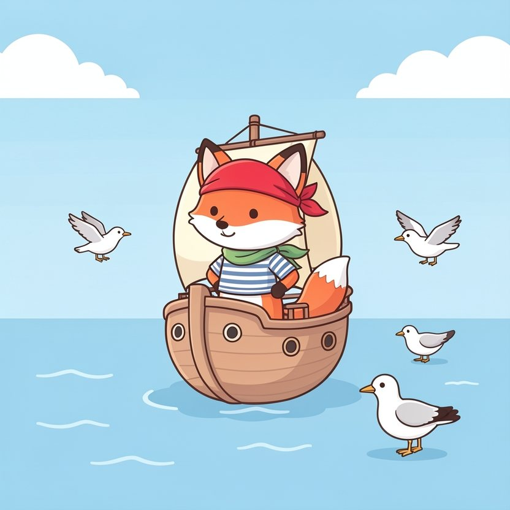

Titistoire › Les Étoiles (3-6 ans)
Filou et la carte à l'envers
Une histoire de Filou le renard pour parler de : dire « je ne sais pas ».

▶ Écouter et regarder l'histoire
Gratuit, sans inscription : la voix lit, le texte suit mot à mot, les images tournent comme dans un album.
Le texte de l'histoire
Sur la mer toute bleue file La Coquille, le plus petit bateau pirate du monde. Tout à l'avant, le museau au vent et le foulard qui claque, se dresse Filou.
Filou est un renard qui sait tout faire. Du moins… c'est ce qu'il raconte, tout gonflé de fierté.
« Grimper au mât ? Facile ! Faire des nœuds marins ? Facile ! Bavarder avec les mouettes ? Fa-ci-le ! »
Ce matin, la capitaine Mirabelle déroule un vieux parchemin tout jauni, qui craque sous ses pattes. « Moussaillons ! Voici la carte de l'île au trésor. Qui sait lire une carte ? »
De sa vie, Filou n'a jamais lu la moindre carte. Mais sa patte se lève toute seule, plus vite que lui. « Moi ! Facile ! »
Tout là-haut, perchée dans son tonneau, Sardine, la petite souris vigie, fronce le nez. Elle a l'œil, Sardine : Filou tient la carte à l'envers.
« À gauche toute ! » ordonne Filou. La Coquille vire à gauche… et fonce droit sur des rochers pointus comme des dents. Criiiic ! La coque les frôle, et passe de justesse.
« C'était… pour vérifier le gouvernail, bredouille Filou, un peu penaud. À droite toute ! »
À droite flotte une ribambelle de méduses roses, tout étonnées de voir passer un bateau. « Pardon, mesdames », murmure Filou par-dessus bord.
Loin derrière, un bateau noir glisse dans leur sillage, sans un bruit. C'est Griffard, le chat pirate. Sa longue-vue à l'œil, il rêve du trésor pour lui tout seul.
« Ce renard a la carte, ricane-t-il. Je n'ai qu'à le suivre à la trace ! » Alors, quand Filou tourne à gauche, Griffard tourne à gauche. Et quand Filou tourne en rond…
… Griffard tourne en rond aussi. Trois fois. « Mais où va-t-il donc, ce renard de malheur ? » grommelle-t-il, la tête entre les pattes. Le voilà qui attrape le tournis.
Le soleil descend, le ciel devient orange. Pas la moindre île à l'horizon. L'équipage a faim, la capitaine bâille, et dans le ventre de Filou, quelque chose se serre comme un nœud marin.
Il a beau scruter la carte en se grattant la tête… Des traits, des croix, des petits dessins : il n'y comprend rien. Rien du tout.
« Si je l'avoue, songe Filou, recroquevillé sur le pont, ils sauront que je ne sais pas tout faire. Et alors… est-ce qu'ils m'aimeront encore ? »
La nuit est tombée. Une petite voix lui chatouille l'oreille : c'est Sardine, grimpée sur son épaule. « Dis, Filou… Tu veux que je te confie un secret ? Moi, je ne sais pas nager. »
« Toi ? Une pirate ? » s'étonne Filou. « Eh oui ! Alors la capitaine m'apprend, un petit peu chaque jour. » Et Sardine mouline des pattes, comme ça. Filou avale sa salive, puis souffle, tout bas :
« Sardine… je ne sais pas lire les cartes. » Et là, chose étrange : dans son ventre, le nœud se défait d'un coup. Ça ne serre plus du tout.
Au matin, Sardine remet la carte à l'endroit. « Regarde. Les pointillés, c'est notre chemin. Et la grosse croix rouge… » « … c'est le trésor ! » s'écrie Filou. Il apprend vite, quand il veut bien apprendre.
Devant tout l'équipage, Filou se racle la gorge, une patte sur le cœur. « Capitaine… je me suis trompé. Je ne savais pas lire la carte. Mais maintenant, je sais un petit peu. »
La capitaine Mirabelle part d'un grand rire qui fait trembler ses moustaches. « Mille sabords ! Il faut être drôlement courageux pour dire ça, moussaillon. Allez, à la barre ! »
Cette fois, La Coquille file tout droit, les voiles gonflées. Une île ! Un palmier ! Et sous le palmier, un coffre débordant de pièces d'or qui brillent comme autant de petits soleils.
Et Griffard ? Il tourne encore en rond, là-bas, au beau milieu de la mer, le menton levé. Jamais, au grand jamais, il n'a osé demander son chemin à personne.
Ce soir-là, Filou s'endort sur le pont, roulé en boule, la carte sous la patte. À l'endroit. Demain, Sardine lui apprend le nom des étoiles. Et lui, il lui apprend à nager.